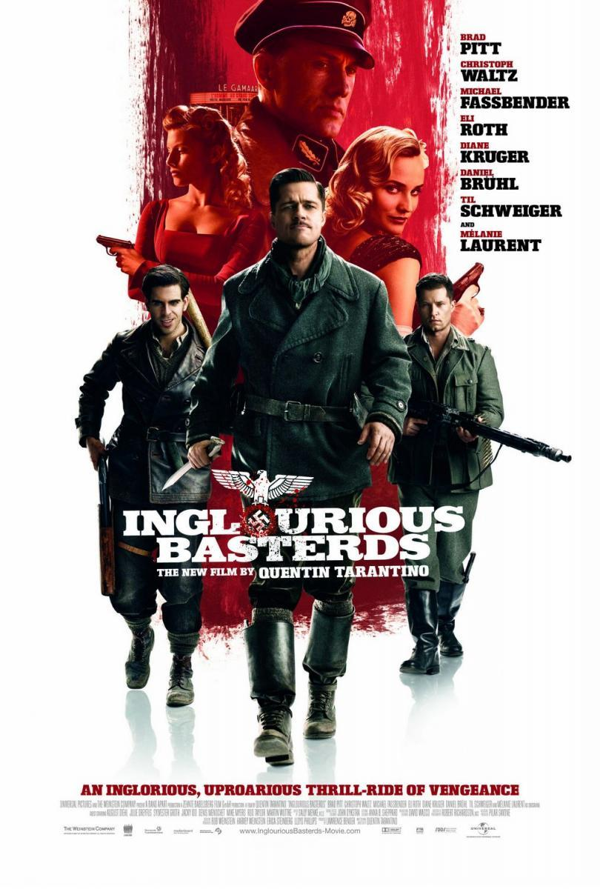

Malditos Bastardos |
||
|---|---|---|
|  | Sinopsis: Segunda Guerra Mundial (1939-1945). En la Francia ocupada por los alemanes, Shosanna Dreyfus (Mélanie Laurent) presencia la ejecución de su familia por orden del coronel Hans Landa (Christoph Waltz). Después de huir a París, adopta una nueva identidad como propietaria de un cine. En otro lugar de Europa, el teniente Aldo Raine (Brad Pitt) adiestra a un grupo de soldados judíos ("The Basterds") para atacar objetivos concretos. Los hombres de Raine y una actriz alemana (Diane Kruger), que trabaja para los aliados, deben llevar a cabo una misión para hacer caer a los jefes del Tercer Reich. El destino quiere que todos se encuentren bajo la marquesina de un cine donde Shosanna espera para vengarse. |
Director:Quentim Tarantino Reparto:Brad Pitt, Christoph Waltz, Mélanie Laurent Año: 2009 Duracion:146 min Pais:Estados Unidos |
Criticas Profesionales:Dorian Málaga (España)Al infierno con los libros de historia; Tarantino libra su propia guerra. (...) una gran, valiente y audaz película bélica. |
Trailer |
Obtener:AlquilarComprar |
Registrate/Iniciar Sesion